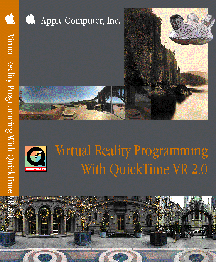

Legacy Document
Important: The information in this document is obsolete and should not be used for new development.
Important: The information in this document is obsolete and should not be used for new development.
Virtual Reality Programming
With Reference Sections
With QuickTime VR 2.0 This book, Virtual Reality Programming With QuickTime VR 2.0, describes QuickTime VR, an extension of the QuickTime technology developed by Apple Computer, Inc. that allows users to interactively explore and examine photorealistic, three-dimensional virtual worlds. In particular, this book describes the QuickTime VR Manager, which is the part of the system software for Macintosh and other computers that you can use to control QuickTime VR movies programmatically. You can use the QuickTime VR Manager to give your application greater control over QuickTime VR movies. For example, you can use the QuickTime VR Manager to
- display movies of panoramas and objects
- perform basic orientation, positioning, and animation control
- intercept and override QuickTime VR's mouse-tracking and default hot spot behaviors
- composite flat or perspective overlays (such as QuickDraw 3D objects or QuickTime movies)
- specify transition effects
- control QuickTime VR's memory usage
- intercept calls to some QuickTime VR Manager functions and modify their behavior
This book also describes the QuickTime VR file format (the format of the movie files that contain QuickTime VR movies). You need this information only if you need to parse existing QuickTime VR movies or you want to create QuickTime VR movies programmatically. For instance, you need this information if you want to develop QuickTime VR movie-authoring software. In general, however, you don't need to know about the format of atoms or atom containers simply to use the functions provided by the QuickTime VR Manager.
- Note
- Currently, only C-language programming interfaces are available.

- Note
- This book does not describe how to capture VR scenes or author QuickTime VR movies using tools such as the QuickTime VR Authoring Tools Suite. See the documentation provided with your authoring software for complete information.
Availability: Click below to obtain Inside Macintosh: Virtual Reality Programming With QuickTime VR 2.0 in any of the following formats:
Acrobat (2.1MB)
© Apple Computer, Inc.
24 JAN 1997